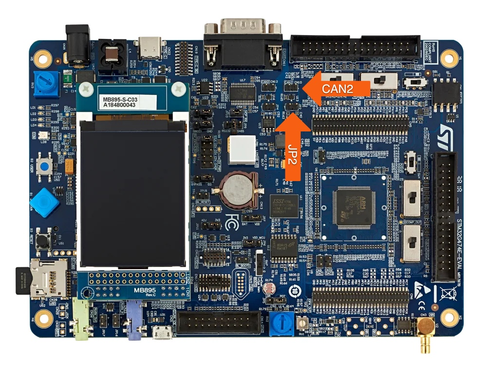

The CANopen FD Slave protocol stack for the STM32G474E-EVAL runs on a bit-rate of 500 kBit/s on interface CAN2. Please make sure that:
- the CAN cable is connected to CN10
- jumper JP2 is set (termination resistor fitted)
For display of the CANopen network state the example uses the LEDs LD1 (green) and LD3 (red), the symbol COS_LED_SUPPORT is configured to 1.

Board STM32G474E-EVAL
The example uses CANopen FD configuration (COS_FD_SUPPORT = 1) with no bit-rate switching as default. Refer to the How to build section if the target should run in Classical CANopen configuration.
Prerequisites
The example project can be built if the following programs are installed:
Please make sure that the value of WIN_TOOLCHAIN_PATH (for Windows) or UNIX_TOOLCHAIN_PATH (for macOS / Linux) inside the cmake/toolchain-gcc-<version>.cmake file is equal to the install path of the GNU Arm Embedded Toolchain.
cmake
#-----------------------------------------------------------------------------------------------------------------------
# set paths to the desired toolchains of corresponding OS
#
set(WIN_TOOLCHAIN_PATH "D:/devtools/GNU_ARM/10 2020-q4-major" CACHE PATH "Windows toolchain for GNU ARM")
set(UNIX_TOOLCHAIN_PATH "/Applications/ARM/gcc-arm-none-eabi-10-2020-q4-major" CACHE PATH "Unix toolchain for GNU ARM")
How to build
Create a local build directory and start the build process within this directory. Make sure to pass the correct toolchain (i.e. GNU Arm Embedded Toolchain) to the CMake process via the parameter -DCMAKE_TOOLCHAIN_FILE. The following examples assume a GNU Arm Embedded Toolchain version 13.2.1.
Passing the value -DCAN_FD=0 to the CMake command line will generate code for Classical CANopen.
Debug build
mkdir build
cd build
cmake -DCMAKE_TOOLCHAIN_FILE=../../../../../../cmake/module/toolchain-gcc-13.2.1.cmake -DCMAKE_BUILD_TYPE=Debug ..
cmake --build .
For generation of Classical CANopen code use the following build steps:
mkdir build
cd build
cmake -DCMAKE_TOOLCHAIN_FILE=../../../../../../cmake/module/toolchain-gcc-13.2.1.cmake -DCMAKE_BUILD_TYPE=Debug -DCAN_FD=0 ..
cmake --build .
Under Windows, you may have to add the parameter -G"Unix Makefiles" to the CMake configuration:
cmake -G"Unix Makefiles" -DCMAKE_TOOLCHAIN_FILE=./../../../../../cmake/module/toolchain-gcc-13.2.1.cmake -DCMAKE_BUILD_TYPE=Debug ..
Release build
mkdir build
cd build
cmake -DCMAKE_TOOLCHAIN_FILE=../../../../../../cmake/module/toolchain-gcc-13.2.1.cmake ..
cmake --build .
Under Windows, you may have to add the parameter -G"Unix Makefiles" to the CMake configuration:
cmake -G"Unix Makefiles" -DCMAKE_TOOLCHAIN_FILE=./../../../../../cmake/module/toolchain-gcc-13.2.1.cmake ..
Resource requirements
The amount of Flash and RAM is given under the following conditions:
- Use dynamic PDO mapping with 4 TPDOs and 4 RPDOs
- Use one physical CAN channel (CP_CHANNEL_MAX = 1)
| Protocol | Memory size Flash | Memory Size RAM |
| Classic CANopen | 18420 | 5688 |
| CANopen FD | 19860 | 6328 |
Testing with a CAN monitor tool
Upon reset, the example will transmit a boot-up message using the identifier 70Bh, representing the configured node-ID 11d.
Time-stamp ID Format DLC Data Comment
------------ ---- ------ --- ------------------------ ----------------------------
264304.90365 70B FBFF 1 00 Boot-up, node-ID 11
Writing a value of 100 ms to the heartbeat producer object (1017:00h) shall result in a cycle heartbeat transmission of the device.
Time-stamp ID Format DLC Data Comment
------------ ---- ------ --- ------------------------ ----------------------------
264790.62152 601 FBFF 9 0B 01 01 00 17 10 06 02 Set 1017:00h (heartbeat) to 100 ms
64 00 00 00
264790.62845 58B FBFF 6 01 21 01 00 17 10 USDO response: OK
264790.72971 70B FBFF 1 7F heartbeat, node-ID 11, pre-operational
264790.83066 70B FBFF 1 7F heartbeat, node-ID 11, pre-operational
264790.93252 70B FBFF 1 7F heartbeat, node-ID 11, pre-operational